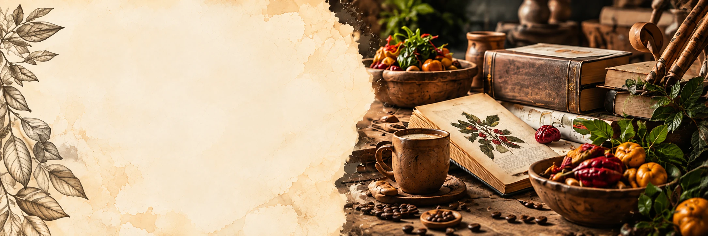
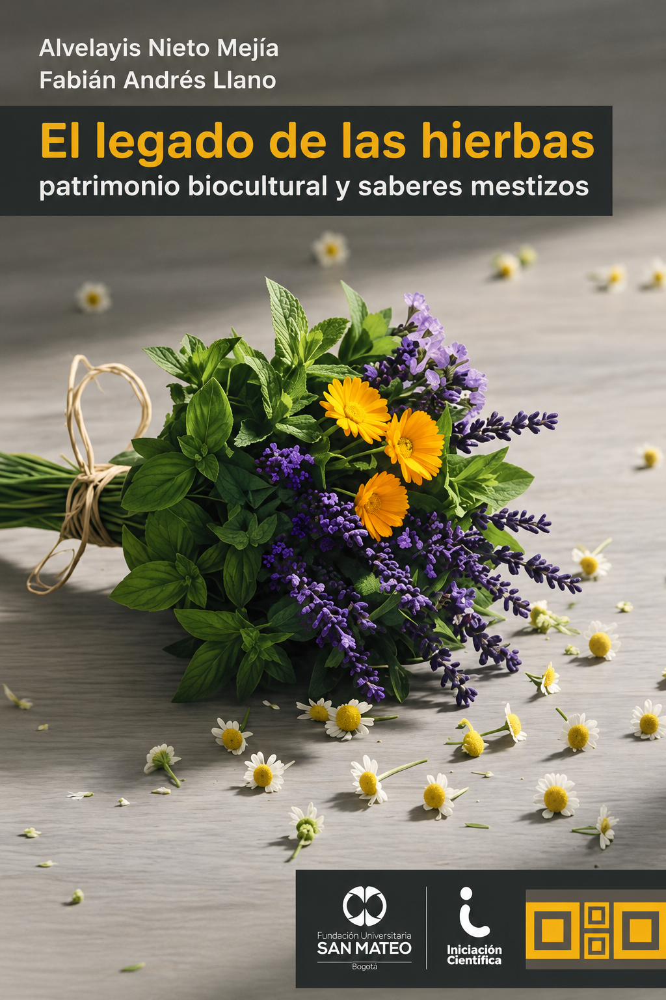

NUESTRA PRODUCCIÓN
PUBLICACIONES
Producción bibliográfica que preserva, analiza y divulga el patrimonio gastronómico colombiano.
Explora nuestras publicaciones → REVISTA DESTACADA · VOL. 7 · NÚM. 2 · 2025
Sosquua
Revista especializada en gastronomía: investigación, memoria, territorio y patrimonio alimentario en diálogo.
Explorar el último número ↗
REVISTA DESTACADA · VOL. 7 · NÚM. 2 · 2025
Sosquua
Revista especializada en gastronomía: investigación, memoria, territorio y patrimonio alimentario en diálogo.
Explorar el último número ↗

NOVEDAD EDITORIAL DESTACADA · 2025 El legado de las hierbas Una obra destacada por su aporte al patrimonio biocultural, los saberes ancestrales y la memoria del territorio. Consultar libro ↗CONOCIMIENTO QUE SE COMPARTE
Conocimiento que
se publica y se comparte
Nuestras publicaciones reúnen libros, capítulos de libro y revistas académicas que aportan al reconocimiento, conservación y difusión del patrimonio gastronómico colombiano.
Ciencia
Territorio
Cultura
Gastronomía
LIBROS RESULTADO DE INVESTIGACIÓN
CAPÍTULOS DE LIBRO
REVISTAS